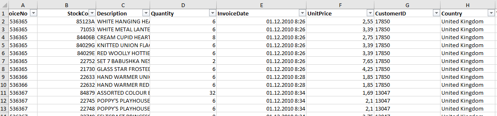

Сократить отток клиентов и повысить эффективность коммуникаций за счёт сегментации клиентской базы и построения воронки взаимодействия.
Данные обезличены и взяты из открытых источников. Структура и логика соответствуют реальному проекту. Ссылка
2011-12-10 — условная дата среза (cutoff)

-- RFM-скоринг
WITH rfm_data AS (
SELECT
"Customer_ID" as customer_id,
('2011-12-10'::date - MAX("Invoice_Date"::date)) as recency,
COUNT(DISTINCT "Invoice_No") as frequency,
SUM("Quantity" * "Unit_Price") as monetary
FROM retail
WHERE "Customer_ID" IS NOT NULL
AND "Quantity" > 0
AND "Unit_Price" > 0
GROUP BY "Customer_ID"
),
rfm_scores AS (
SELECT *,
CASE
WHEN recency <= 30 THEN 5
WHEN recency <= 90 THEN 4
WHEN recency <= 180 THEN 3
WHEN recency <= 365 THEN 2
ELSE 1
END as r_score,
NTILE(5) OVER (ORDER BY frequency) as f_score,
NTILE(5) OVER (ORDER BY monetary) as m_score
FROM rfm_data
)
SELECT
customer_id,
recency, frequency, ROUND(monetary, 2) as monetary,
r_score, f_score, m_score,
CONCAT(r_score, f_score, m_score) as rfm_segment
FROM rfm_scores
ORDER BY monetary DESC
LIMIT 15;
• Excel • SQL • Power BI